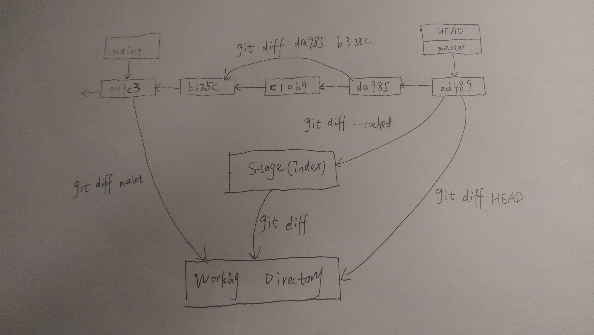

基本概念
- Snapshots, Not Differences
- Nearly Every Operation Is Local
- Git Has Integrity
- Git Generally Only Adds Data
三种状态
Git has three main states that your files can reside in:
- commited: Committed means that the data is safely stored in your local database.
- modified: Modified means that you have changed the file but have not committed it to your database yet.
- staged: Staged means that you have marked a modified file in its current version to go into your next commit snapshot.
三种区域
This leads us to the three main sections of a Git project:
- git directory(提交区): The Git directory is where Git stores the metadata and object database for your project. This is the most important part of Git, and it is what is copied when you clone a repository from another computer.
- working tree(工作区): The working tree is a single checkout of one version of the project. These files are pulled out of the compressed database in the Git directory and placed on disk for you to use or modify.
- staging area(暂存区): The staging area is a file, generally contained in your Git directory, that stores information about what will go into your next commit. Its technical name in Git parlance is the “index”, but the phrase “staging area” works just as well.
工作流程
The basic Git workflow goes something like this:
- You modify files in your working tree.
- You selectively stage just those changes you want to be part of your next commit, which adds only those changes to the staging area.
- You do a commit, which takes the files as they are in the staging area and stores that snapshot permanently to your Git directory.
对比
git diff
比较工作区和暂存区，找出那些尚未被记录到暂存区的对工作区的改变
This command compares what is in your working directory with what is in your staging area. The result tells you the changes you’ve made that you haven’t yet staged.
git diff --staged 或 git diff --cached
比较暂存区和提交区，找出哪些对暂存区的改变会进入到下一次提交
If you want to see what you’ve staged that will go into your next commit, you can use git diff --staged. This command compares your staged changes to your last commit
(--staged与--cached相同)

删除
git rm与git add相反，如果你不想track文件foo了，那么可以用git rm foo把它删除。但如果foo有改变在暂存区，会报下面错误：
如提示所述，这时--cached会保留磁盘，仅把foo变为untracked；-f会强制删除文件
git rm --cached
如果你忘记在.gitignore中添加某种文件类型，如日志文件，而又恰巧不小心把这种文件add到了暂存区，这时可用git rm --cached foo.log将它从暂存区删除，这样commit的时候就不会把这种文件commit到提交区，而且也不会将文件从工作目录中删掉
撤销
git commit --amend
如果你已经完成了某项功能的开发准备好commit了，用git commit -m "complete feature #7"做了提交。然而却发现你忘了把一个与该功能有关的文件foo.java添加到暂存区了，导致这个文件没有被存入提交快照，如果用git add foo.java然后再commit一次，commit message怎么写才好呢？写”forgot foo.java”？这样不太好，会被老板骂，怎么办呢？用--amend再commit一次就好了，这次提交会覆盖上次有问题的提交，而且git log中只会显示这次提交的记录，这样就避免了同一功能对应多次提交记录。
完整过程如下：
git reset HEAD <file>
Unstaging a Staged File：比如你想做一次commit，但是暂存区中有你不想提交的文件，那么可以用该命令将文件从暂存区删除
git checkout -- <file>
Unmodifying a Modified File：比如你已经修改了某文件，但还未将修改添加到暂存区，此时你想丢掉做出的修改，那么可用该命令将文件恢复成上次提交的样子
可恢复与不可恢复
Remember, anything that is committed in Git can almost always be recovered. Even commits that were on branches that were deleted or commits that were overwritten with an --amend commit can be recovered (see Data Recovery for data recovery). However, anything you lose that was never committed is likely never to be seen again.
分支
配置
用户配置
git config --global user.name <your_name>git config --global user.email <your_email>配置级别
--local：【默认，高优先级】，只影响本仓库，配置信息存储于本仓库中(.git/config)--global：【中优先级】，影响所有当前用户的git仓库，配置信息存储于用户目录中(~/.gitconfig)--system：【低优先级】，影响全系统的git仓库，配置信息存储于系统目录(/etc/gitconfig)
提交记录
git log 查看提交记录git log --oneline 美化输出信息只显示一行